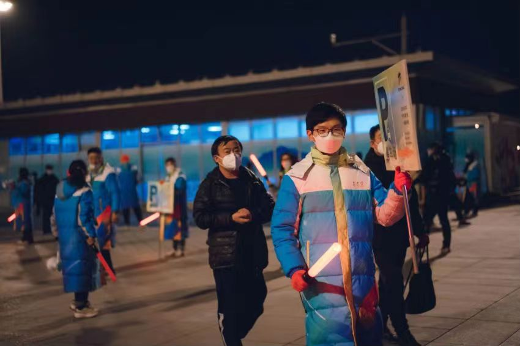

团队介绍
北京信息科技大学冬奥精神宣讲团（以下简称宣讲团），成立于2018年7月，以宣讲奥运冠军故事和奥运知识为主，辅以调查研究冬奥带来的经济文化社会等方面影响，履行好我们“青春热情融化冰雪”——冬奥精神宣讲团应尽的职责与义务。
宣讲部：撰写宣讲稿（中文或英文），包括项目宣讲、冠军故事宣讲、科技助奥、绿色冬奥、传统文化研讨，共五个方面，参与社区、企业、学校宣讲活动。
宣传部：撰写活动记录等，活动现场拍照，宣传单、纪念品设计。
技术部：负责微信公众号运营，宣传视频制作，新闻资料存档。
外联部：负责对外沟通交流，为采访活动和宣讲活动奠定基础，同时也是采访活动的主力。
科研部：组织同学们参与哲学社科类学科竞赛，提高科研能力。
组织部：协助各个部门工作，组织宣讲等活动，保障活动的顺利开展。各部门活动情况统计。
文体策划部: 由具有不同特长的同学们组成，在这里你可以施展自己的才华。除此之外，还可以参与多种文体活动的策划与运行管理，如毕业生晚会等。
志愿者风采
王伯涛
王伯涛，来自北京信息科技大学机电学院研2102班，作为一名光荣的志愿者，坚持从生活中的点滴小事做起，曾参与下乡义务维修、志愿植树、国际马拉松赛志愿者、慰问社区孤寡老人、给孤儿院的小朋友送去温暖等多种志愿活动；认真践行志愿精神，传播先进文化，希望能够为建设团结互助、平等友爱、共同前进的美好社会贡献出自己的一份力量。保景程
保景程，2003年2月生，现就读于北京信息科技大学，信息管理与信息系统专业本科大一学生。擅长宣讲，节目活动主持，演讲、文稿审核等。曾参加过北京科技园志愿活动，积极参与社团以及实践团活动，积极参与各类项目研讨。曾参与“创新杯”、“挑战杯”等比赛。性格活泼，乐于助人。

罗杰琛
罗杰琛，北京信息科技大学数据科学与大数据技术2001班学生。在校内校外参加了多个志愿活动，从建党一百周年到冬残奥会都有参与。在冬残奥会前，花了3天时间来训练面对残缺人的礼仪，以及如何帮助视力残障、心理残障、肢体残障等不同残障人员。在做志愿活动的期间，带着志愿者的笑容，既温暖了他人，也充实了自己。程涛
程涛，目前是北京信息科技大学计算机学院的一名研究生，专业是电子信息（计算机技术）。本科期间参与过“为爱行走”常州站大型公益徒步活动、第一届人工智能与服务学术论坛等活动的志愿者，多次参与天爱儿童康复中心组织的关爱自闭症儿童活动。研一期间参与了北京冬奥会与冬残奥会的志愿服务。为祖国的发展、社会的进步积极做贡献，他一直在路上。
- 联系
我们

工作日：
早9:00-晚18:00
杨老师：
400-888-8888